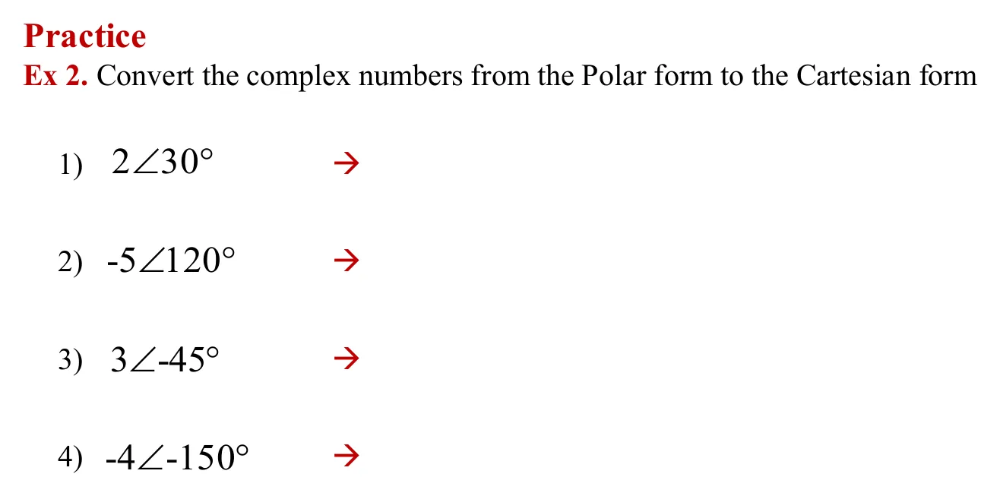
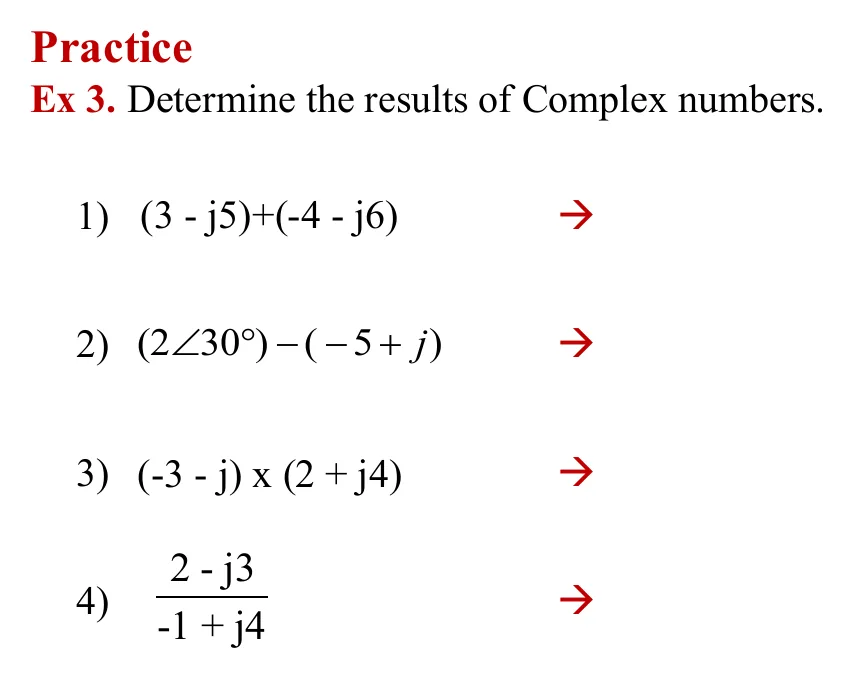

A complex number is an ordered pair \((a, b)\) that sits as a point on a plane: the horizontal axis is the real part, the vertical axis the imaginary part. The same point has two addresses: Cartesian form \(a + jb\) (go right a, go up b) and polar form \(r\angle\theta\) (turn to angle θ, then go r). Electrical engineers write \(j\) instead of \(i\) because \(i\) means current. This page has 5 theory topics (A–E), each with a plane you can drag, then the 12 slide exercises, one at a time, each with its own plane and a solution that opens step by step.
One at a time: try first (r, and θ in degrees, to at least 2 decimal places; −150° and 210° count as the same angle), then open the solution step by step. The plane draws along with the open steps.
Ex 2: แปลงจากรูปเชิงขั้วเป็นรูปคาร์ทีเซียน (สไลด์หน้า 19)
Ex 2: polar to Cartesian form (slide p. 19)

โจทย์จากสไลด์หน้า 19 (หัวสไลด์พิมพ์ว่า Series and Parallel Connected Sources ซึ่งคัดลอกมาจากบทอื่น) · แตะรูปเพื่อขยายThe problems, slide p. 19 (its header reads "Series and Parallel Connected Sources", copied from another chapter) · tap to enlarge
Ex 3: หาผลลัพธ์ของจำนวนเชิงซ้อน (สไลด์หน้า 20)
Ex 3: find the results (slide p. 20)

โจทย์จากสไลด์หน้า 20 · แตะรูปเพื่อขยายThe problems, slide p. 20 · tap to enlarge
ตอบในรูป \(a + jb\) (ใส่ส่วนจริงและส่วนจินตภาพ)
Answer as \(a + jb\) (enter the real and imaginary parts).
Theory A: drag z to \(-1 + j\) (second quadrant). A calculator gives \(\arctan(1/{-1}) = -45^\circ\), which points into the fourth quadrant (red line). The right angle is \(-45^\circ + 180^\circ = 135^\circ\) (green line).
Ex 1, item 4: arctan gives \(30^\circ\), but the true angle is \(30^\circ - 180^\circ = -150^\circ\).
Rule: always look at the sign of a first. If a is negative, add or subtract 180°. Many calculators have a Pol( ) or atan2 key that does this for you.
Try this 2 — multiplying is turning
Theory C: drag z around. jz stays the same distance from the origin but is always turned 90° ahead, because \(j = 1\angle 90^\circ\). Where are \(j^2 z\) and \(j^3 z\)?
Theory E: the product has size \(r_1 r_2\) and angle \(\theta_1 + \theta_2\). Make \(|z_2| = 1\) and the product is a pure turn.
Theory E, divide: angles subtract and sizes divide. So polar form is far easier for multiplying and dividing, while Cartesian form is easier for adding and subtracting.
Try this 3 — conjugates and negative sizes
Theory B: \(z\,z^* = |z|^2\) is always real, which is why division multiplies by the conjugate (Ex 3, item 4).
Ex 2, item 2: a minus sign in front of the size means a further 180° turn, \(-5\angle 120^\circ = 5\angle -60^\circ\).
Question: what are \(j^3\) and \(j^4\)?
Source: chapter 1 slides, pp. 13–20 (the slide pictures are on this page) · Hayt, Kemmerly & Durbin, Appendix 5 (complex numbers)